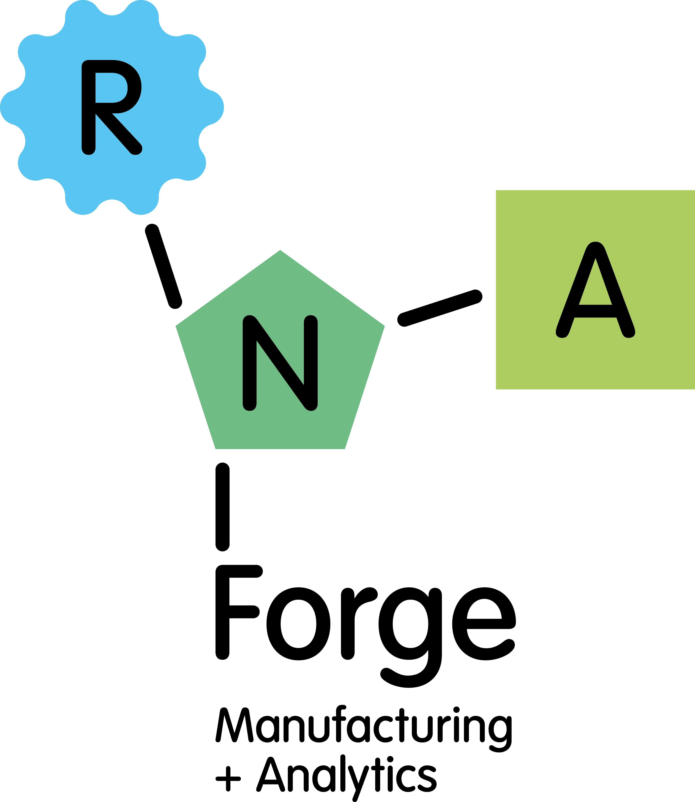

Construct and material strategy
Assessment of RNA construct choices, input materials, and quality attributes that shape process performance.

Technology
Our technical platform is designed to connect RNA product choices with downstream process, analytical, and transfer requirements.
Platform logic
RNA Forge focuses on the interface between molecule design, critical raw materials, process control, and practical manufacturing transfer. We help teams understand how early technical decisions can influence yield, quality, scalability, cost, and partner readiness.
The approach is modular: each work package can stand alone for diligence or planning, or integrate into a broader development program as evidence accumulates.
Assessment of RNA construct choices, input materials, and quality attributes that shape process performance.
Identification of manufacturing constraints, development gaps, and decisions needed for credible scale-up.
Technical outputs structured for investors, collaborators, CDMOs, and non-dilutive funding reviewers.
Why it matters
Programs that address manufacturability early can make stronger decisions about capital allocation, partner selection, and development sequence. RNA Forge helps make those decisions explicit, evidence-led, and commercially useful.